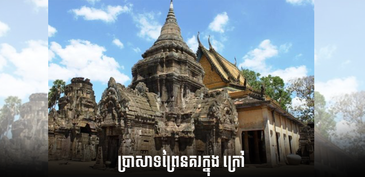
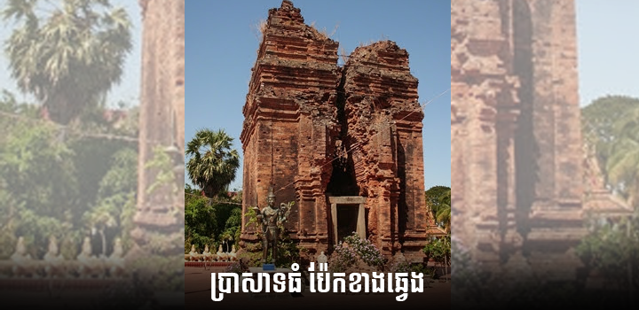
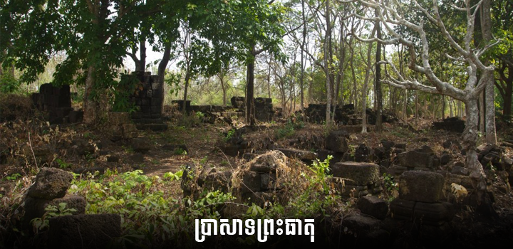

ប្រាសាទព្រៃនគរក្នុង ក្រៅ
ប្រាសាទព្រៃនគរក្នុង ក្រៅជាបុរាណដ្ឋានមួយដែលស្ថិតនៅទិសអាគ្នេយ៍នៃខេត្តកំពង់ចាម ក្នុង ភូមិព្រៃនគរ ឃុំដូនតី ស្រុកពញាក្រែក មានចម្ងាយ៤២គ.ម ពីទីរួមខេត្តកំពង់ចាមតាមផ្លូវជាតិលេខ៧ ហើយបត់ស្តាំតាមផ្លូវលំ ត្រង់ម្តុំភូមិដំណាក់ចារ។ រមណីដ្ឋាននេះមានផ្លូវលំ៥ ដែលជាទីប្រជុំជន ឃុំដូនតីៈ ច្រកផ្លូវទីប្រជុំជនខ្នារមានចម្ងាយ៦គ.ម ច្រកផ្លូវព្រះធាតុមានចម្ងាយ៥គ.ម ច្រកផ្លូវកណ្តុរជុំ មានចម្ងាយ៥គ.ម ច្រកផ្លូវដំណាក់ចារមានចម្ងាយ១០គ.ម ច្រកផ្លូវព្រៃនគរក្នុងមានចម្ងាយ៥.៣គ.ម។
បុរាណដ្ឋានេះជាកន្លែងសម្រាប់ពុទ្ធបរិស័ទ ភ្ញៀវទេសចរគោរពបូជា និងជួបជុំលេងល្បែងនានា ពេលបុណ្យទានម្តងៗ។ ប្រាសាទនេះមានទ្រង់ទ្រាយដូចប្រាសាទសំបូរព្រៃគុកដែរ បានកសាងឡើង នៅស.វទី៩ នៃគ.ស។ យ៉ាងណាមិញនៅស.វទី១៦ ស្តេចកនបានភៀសខ្លួនពីការចង់ធ្វើឃាតរបស់ ស្តេចស្រីសុគន្ធបទ ហើយបានកេណ្ឌទ័ពនៅទីនេះប្រឆាំងរហូតទទួលបានជ័យជំនះ។
ប្រាសាទព្រៃនគរក្នុង ក្រៅមានផ្ទៃដី ២៥០០ម៉ែត្រការេ ដែលក្នុងនោះមាន៖
១.ប្រាសាទធំ
ប្រាសាទធំមានទីតាំងលើទួលខ្ពស់នៃខឿនវិហារសព្វថ្ងៃ ដែលមានប្រាសាទបីសាងសង់ឡើង ពីឥដ្ឋតាន់ក្រហម។ ប៉ុន្តែប្រាសាទធំខាងឆ្វេងត្រូវបានរលំបាត់រូបរាងអស់ទៅហើយ នៅសល់តែដីទទេ តែប្រាសាទពីរទៀតនៅល្អ ដែលក្នុងប្រាសាទនោះនៅមានសល់រូបបដិមាករ និងវត្ថុបុរាណបាក់បែក ខ្លះដែលទាក់ទងនឹងព្រហ្មញ្ញសាសនា។ ប្រជាពលរដ្ឋនៅតំបន់នោះគេជឿថា ប្រាសាទនេះមានវត្ថុ ស័ក្តិសិទ្ធិនៅថែរក្សា។ ចំពោះអ្នកទេសចរដែលចង់ថតរូប ប្រាសាទដែលនៅសល់ទាំងពីរ បើគ្មាន ការអុជធូបបន់ស្រន់សុំទេនោះ គឺមិនអាចថតរូបជាប់នោះឡើយ។
២.ប្រាសាទព្រះធាតុ
ប្រាសាទព្រះធាតុស្ថិតនៅខាងកើតនៃប្រាសាទធំ មានទាំងអស់៦ប្រាសាទ តែត្រូវរលំបាក់បែក ដោយសារសង្គ្រាម។ បច្ចុប្បន្ននៅសល់ប្រាសាទមួយ ប៉ុន្តែត្រូវទ្រុឌទ្រោមស្ទើរតែរលំដោយសារក្រុម ចោរលួចជីករកកំណប់។ ស្ថិតនៅប៉ែកខាងជើងឈាងខាងកើតប្រាសាទធំ មានស្រះមួយសាងសង់ ក្នុងសម័យនោះហៅថា ត្រពាំងព្រះធាតុ។
៣.កោះអណ្តែត កោះប្រាក់
កោះអណ្តែត កោះប្រាក់ ស្ថិតនៅខាងជើងភូមិនេះ មានបណ្តោយ៣០ម និងទទឹង២០ម ឬហៅម្យ៉ាងទៀតថា ស្រះទឹម។
៤.ទំនប់ ឬកំពែងព័ទ្ធជុំវិញ
ទំនប់ ឬកំពែងព័ទ្ធជុំវិញស្ថិតនៅជុំវិញទីក្រុងស្រឡប់ដូនតីពិជ័យព្រៃនគរ ដែលមានដាំដើម ឬស្សីព្រៃញឹកស្អេកចូលមិនចុះ។ តំបន់នោះមានកំពស់ ១០ម(ពេលសាងសង់) បច្ចុប្បន្នកំពស់ ១.២០ម ជើងទំនប់ប្រមាណ១៥ម(ពេលសាងសង់) បច្ចុប្បន្នសល់ ៣ម និងមានប្រវែង ២៥០០ម បួនជ្រុង។ ទំនប់នេះត្រូវបានខូចខាតដោយកន្លែង។